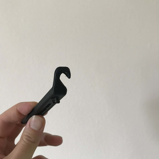

a. The hook side
Use this to pull the tyre out. Once you get hold of the tyre, you will be able to take the tube from under it.
b. The other side
After you took the faulty tube off, you’ll want to replace it with a fresh one. Depending on the rigidity of the tyre, this might be challenging. Thankfully, we can use this to push the new tube in its place and then put the tyre back on. Job done. Super helpful!
c. Lightweight
I’ll just state the obvious fact that this is made of plastic and is super easy to carry around.
d. Smooth
Before I found out about this I was using kitchen knives. Of course that’s a bad idea because you could cut your tube, tyre, or much more valuable parts with it. Luckily, there’s no risk in using the tyre tool as it’s made of plastic and has no sharp edges.